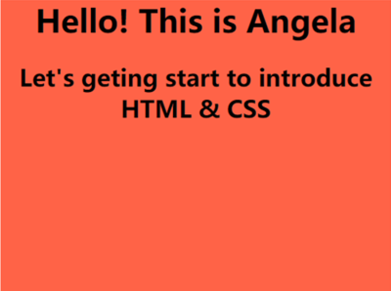
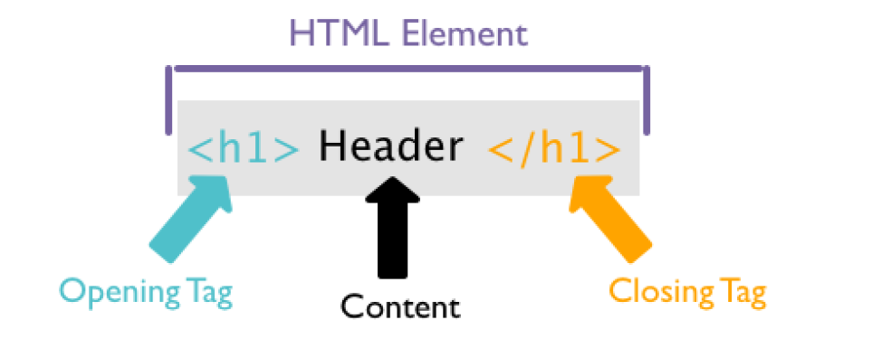
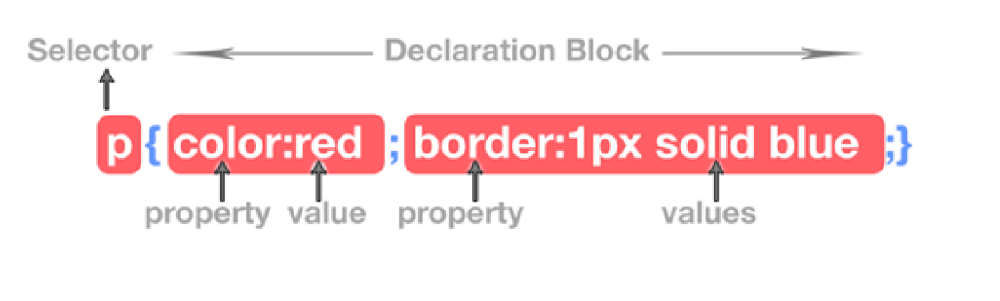

Get start to HTML & CSS

source from: https://www.sololearn.com/blog/12/5-reasons-to-learn-html-and-css/
What is HTML?
HTML, called Hypertext Tag Language, is a markup language used to create web pages and web applications. It consists of a series of tags. These tags allow documents on the Web to be formatted in a uniform way, linking disparate Internet resources into a logical whole.
HTML is a text-based markup language that tells browsers how to display images, fonts and other multimedia elements on the InternIt is used to create attractive web pages with the help of styles and is presented in a beautiful format on a web browser.HTML documents consist of a number of HTML tags, each containing different content.
source from: https://curriculum.code.org/csd-18/unit2/4/
What is CSS?
HTML tags are essentially keywords (tag names) enclosed in pointed brackets, with the start tag (<) and the end tag (>) usually appearing in pairs. The start tag is used to indicate the start of an element; the end tag is used to close the HTML element to distinguish between the individual elements.
CSS (Cascading Style Sheets) is a computer language used to represent the style of documents such as HTML (an application of the Standard Generalized Markup Language).CSS can be used not only to decorate web pages statically but also to dynamically format elements of web pages with various scripting languages.
CSS technology can be used on the homepage to achieve more precise control over the layout, fonts, colors, backgrounds and other effects of the page. With a few simple modifications to the corresponding code, the appearance and formatting of different parts of the same page, or pages with different numbers of pages, can be changed.
CSS declarations are enclosed in curly brackets, and each declaration consists of two parts: the property and its value, separated by a colon. We can define multiple properties in a single declaration, with each property separated by a semicolon.
source from www.tutorial.techaltum.com
- Selector: Indicates the HTML element to be styled.
- Declarations: include properties and values separated by colons. In addition, the brackets that surround all declarations are called declaration blocks.
- Attributes: Indicates aspects of the element to be changed.
- Value: specifies the setting to be applied in the selected property.
References
HTML Tutorial. (2021). Retrieved 2 October 2021, from https://www.w3schools.com/html/default.asp
5 Reasons to Learn HTML and CSS. (n.d.). Retrieved from https://www.sololearn.com/blog/12/5-reasons-to-learn-html-and-css/